01
2025
Musafir
Resort wear2025
Roads to Becoming — a resort wear collection inspired by the lived world of the Indian truck driver, where trucks become moving homes, shrines and memory boxes.
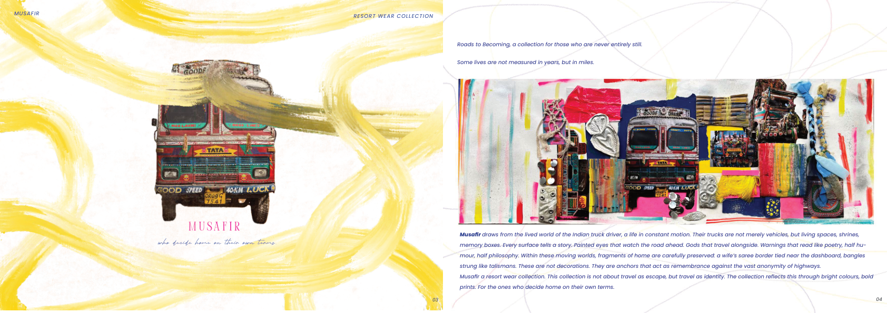
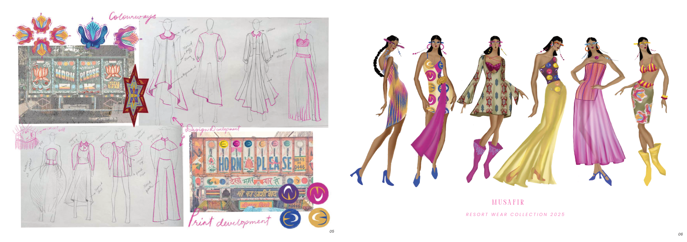
A visual portfolio by Charithra Jain — fashion, knitwear, styling, embroidery, draping and print design shaped by memory, material and movement.
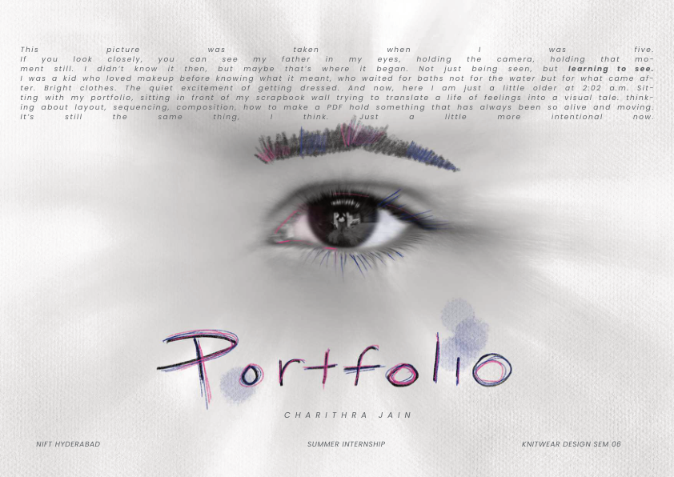
This portfolio begins with a childhood memory: loving makeup, bright clothes, getting dressed, and the quiet excitement of being seen.
Today, that instinct has become an intentional practice of composition, styling, textile exploration and visual storytelling.
The work moves between resort wear, hand-flat knitting, styling, embroidery, draping and print design.
Roads to Becoming — a resort wear collection inspired by the lived world of the Indian truck driver, where trucks become moving homes, shrines and memory boxes.


Inspired by the iconic twenty-one stripe sailor shirt and WGSN S/S 26 Nautical Illusion, exploring rib ripple, racking, drop needle, jacquard and Milano structures.
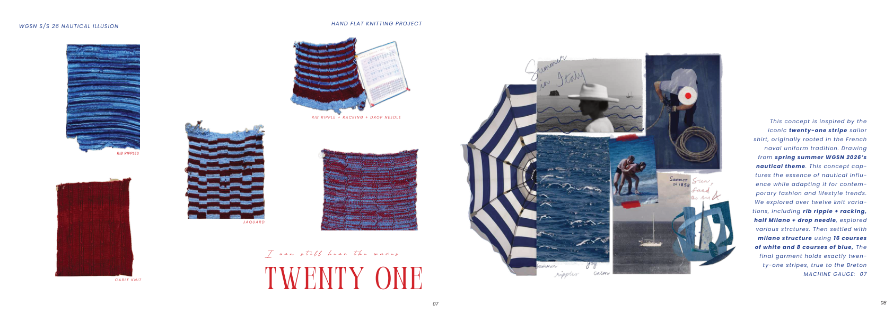
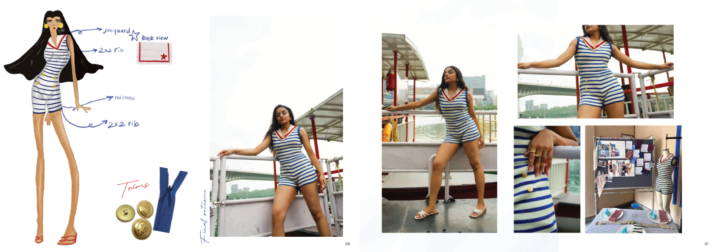
A style crossover built around contradictions: sport and shimmer, discipline and excess, jerseys and curated accessories.
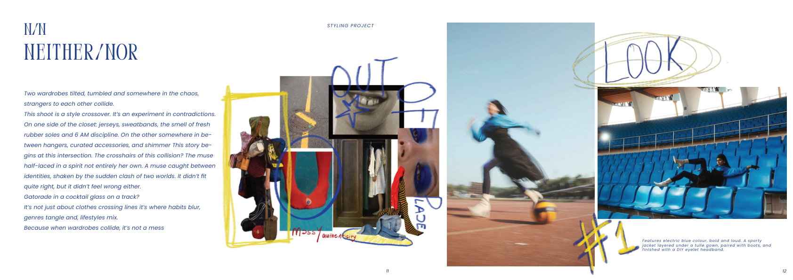
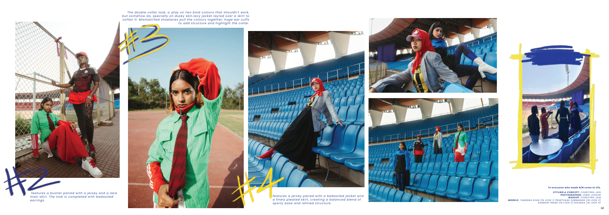
An embroidery project rooted in childhood summers, family memories and the quiet world of Malgudi Days.
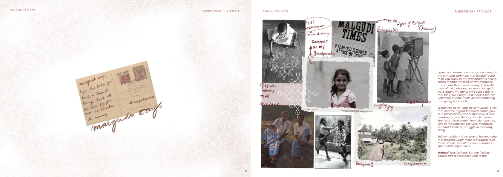
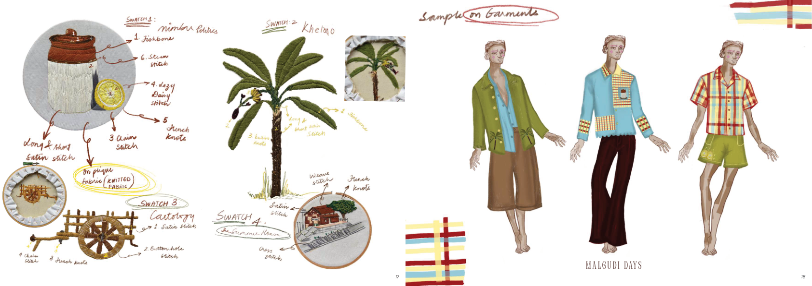
A gown built around a siren who does not chase attention — she disrupts it. Drapes appear almost collapsed while retaining control.
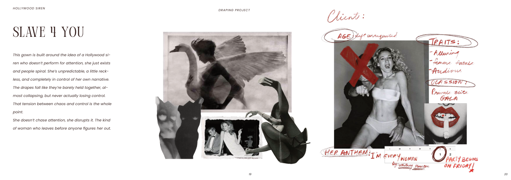
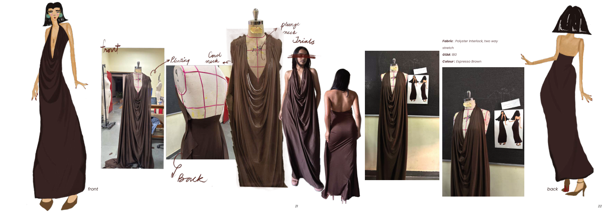
A print exploration around the pomegranate as a symbol of duality, love, desire, purity, sin, life and death.
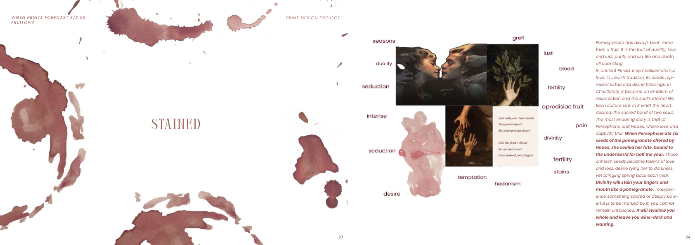
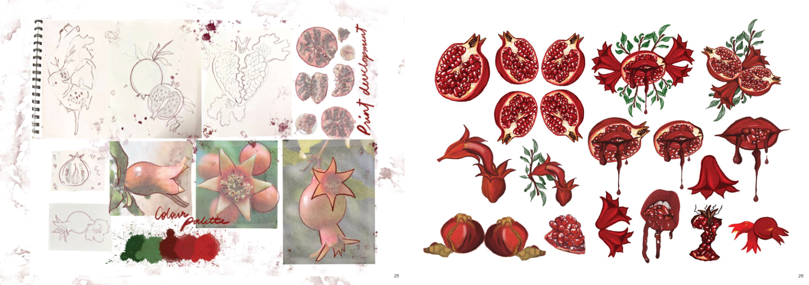
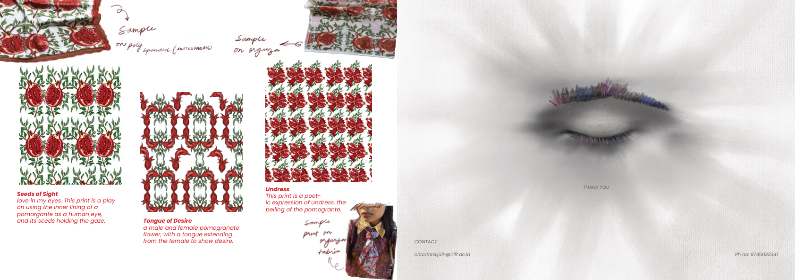